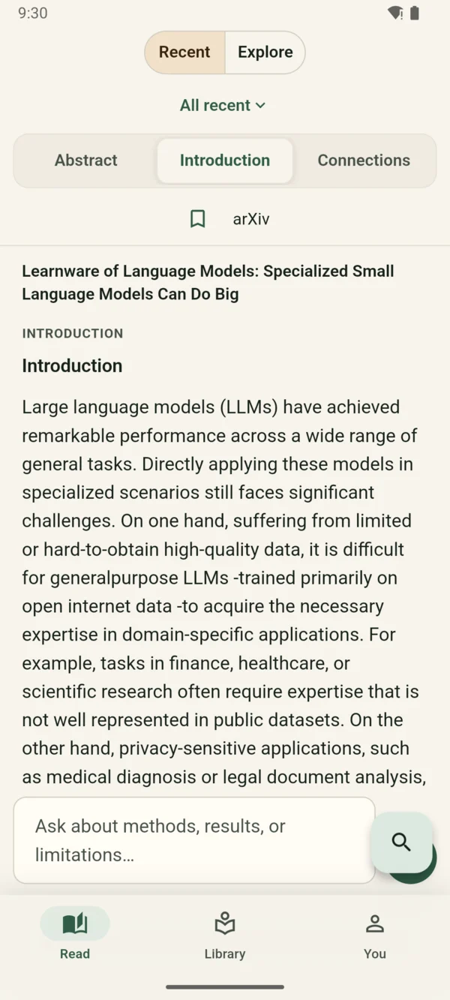

Abstract
Move up or down for the next or previous paper. Each card is the real arXiv record, and the original is always one tap away.
Pakperk is a phone-first arXiv reader built around one interaction. Start at the abstract, move left into a parsed Introduction and ask the paper questions, then left again into the references it actually leans on — explained.

Vertical movement changes the paper. Horizontal movement changes how deep you are in it. Nothing else to learn.
Move up or down for the next or previous paper. Each card is the real arXiv record, and the original is always one tap away.
Move left. Pakperk reads the PDF's real structure and lays the introduction out for a phone. Preparation starts on your first committed move into the stage — never from scrolling past a card.
Move left again. The references the introduction leans on, each with a plain reason it matters and a link to the original work.
The stages that make a paper legible on a phone: the introduction the authors actually wrote, and what you get back when you question it.


Screenshots from an Android device. The paper is arXiv:2505.13425.
A reader you open on a train, in a queue, or with one hand — and that behaves when the network does not.
Save a paper to To Read. The change lands on the device immediately and synchronizes when you are online and signed in. Removing one offers Undo. Saving never starts a paper's preparation.
Pakperk opens cached or bundled metadata before it waits for a request, then refreshes in place. It remembers the paper you were on, the stage, and the scroll position.
Sign-in opens the system browser and uses the service's identity provider. Pakperk never asks for a provider password inside the app, and access tokens stay in memory rather than on disk.
Every paper keeps its exact arXiv identifier and a link to the source record. Pakperk reads arXiv; it is not affiliated with arXiv and does not stand in for the original.
Guest reading needs no account. Operational telemetry excludes paper text, prompts, chat messages, handles, and email. No contacts, no precise location, no advertising identifier.
Every swipe has a labelled alternative. Light and dark themes, reduced motion, large text, screen-reader semantics, keyboard focus, and system back navigation are part of the baseline.
A deliberately narrow stack, chosen so the reading loop stays fast and the server stays boring.
The private test build for Android, published directly by the service operator. There is no store listing yet.
Android 7.0 (API 24) or newer, on a 64-bit ARM device (arm64-v8a) — which is every mainstream phone sold in the last several years. This build has no 32-bit engine, and HarmonyOS NEXT cannot install APKs at all.
Your browser or file manager will ask you to allow installing from this source; that permission is per-app and you can revoke it afterwards. If an older Pakperk signed with a different key is already installed, uninstall it first.
This build talks to the private test server, not a production service. Accounts and the To Read library are on; public discussion is off. Expect test data and occasional downtime.
Compare before you install. The file hash:
155d34e9a1748f56494d9a8c6749f22cd5e78b6e0e9f92c08e013519d048e08b
Signing certificate (SHA-256):
fcf345e1a6d4e5d9579f4125ec48d88dc8b7041b20a908ca1f31df358a3d8cd3
On a Mac or Linux box:
shasum -a 256 pakperk-0.2.0-dev.apk